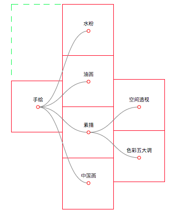

一.简介
首先，让我们来了解一个这个库主要解决的问题是什么，如何使用以及问题反馈等基本信息。
1.1 关注的问题
本库致力于提供更简单的Web端二维绘图接口，主要包括这些方面：画笔、辅助计算、结点操作和一些零碎的小工具方法。我们希望绘图是简单而有趣的、高效而愉悦的！
主要是在svg和canvas2D上绘图，虽然有提供比如Maritx4坐标变换等三维相关方法，这是考虑到一些潜在的需求。
1.2 如何使用
如果你开发的是一个web项目，直接在页面引入打包后的文件后即可（在代码中通过image2D或$$调用）：
<script src="./build/image2D.min.js" type="text/javascript"></script>
如果你想通过npm方式管理，首先你需要通过命令行安装image2D，就像这样：
npm install --save image2d
安装好了以后，在需要的地方引入即可：
// ESMAScript6+规范引入 import $$ from 'image2d';
或者
// CommonJS / AMD规范引入
const $$ = require("image2d");
1.3 获取帮助
在使用image2D的时候，如果遇到任何疑惑或问题，包括建议或对未来版本的想法，请先在 Github issue 上查找是否存在相似内容，然后进行补充或追问，当然也可以增加新的话题进行交流，除非特殊情况，你会在48小时内获得 作者 回复。
二.结点操作
为了绘图的方便，我们提供了最基本的结点相关操作。因为这些操作是为了绘图而开发的，可能和纯粹的结点操作方法在设计上有所不同，请知悉。
2.1 结点对象
所有的结点操作都是由结点对象提供的，因此，我们首先来看看如何创建一个结点对象：
var imageObject=$$(selector[, context]);
如上所示，通过执行$$或image2D方法即可获取一个结点对象，我们可以传递二个参数来确定当前结点对象维护的结点是哪些。
结点对象维护了一些结点，调用结点对象上的方法，就是对维护的这些结点进行操作。
第一个参数selector（称为选择器）是必须的，用以确定当前维护的结点是哪些。
第二个参数context是可选的，默认选择器在全局查找，你也可以通过传递一个dom结点指定查找上下文（id选择器会忽略此参数直接在全局查找）。
选择器
任何合法的选择器都应该是下列中的某一种：
- 模板字符串（除canvas外，生成的默认都是svg标签），比如'<g>'、'<canvas>非常抱歉，您的浏览器不支持canvas!</canvas>'等。
- ID选择器，比如'#demo'会选中id是'demo'的第一个标签。
- class和标签选择器，比如'.cls'、'div'、'div.cls'和'g.info.warn'等。
- 全部选择器，也就是字符串'*'，会选中全部结点。
- 非查询选择器，包括：结点，结点数组和结点对象。这类选择器不会进行查找，直接把传递的结点作为维护结点，因此也会忽略查找上下文。
- 筛选函数，传递一个函数，函数形参是当前面对的结点，通过返回true或false来判断是否把当前面对的结点加入结点对象中。
创建好了结点对象以后，后续依旧可以对维护的结点进行筛选后获取新的结点对象：
var new_imageObject=imageObject.filter(filterback);
返回新的结点对象，不会修改原来的结点对象。其中filterback叫做筛选函数，有二个形参，分别是当前面对结点序号和维护了当前面对结点的结点对象，通过返回true或false来判断是否把当前面对的结点加入新创建的结点对象中。
特别注意：第二个参数context除了可以是dom结点外，还有二个特殊的字符串可以作为参数"html"（或"HTML"）和"svg"（或"SVG"），如果传递这二个字符串中的某个，表示把第一个参数selector作为模板字符串生成新的结点（前者生成html结点，后者生成svg结点）。
2.2 编辑
把当前维护的结点加到目标结点内部的结尾：
imageObject.appendTo(target[, context]);
target是一个合法的选择器即可，context是一个结点（当然，额外有二个字符串"html"和"svg"可以作为参数，和上面一样），表示目标结点查找上下文，可选，默认全局查找，下同。
把当前维护的结点加到目标结点内部的开头：
imageObject.prependTo(target[, context]);
把当前维护的结点加到目标结点之后：
imageObject.afterTo(target[, context]);
把当前维护的结点加到目标结点之前：
imageObject.beforeTo(target[, context]);
从页面中删除当前维护的结点：
imageObject.remove();
设置或获取结点中的文本：
imageObject.text([content]);
2.3 样式和属性
修改或获取结点样式：
imageObject.css();
通过不同的参数来确定是获取样式还是设置样式，具体有下列参数选项可选：
- (key):获取指定样式。
- (key,value):设置指定样式。
- ():获取全部样式。
- (json):设置大量样式。
设置或获取结点属性：
imageObject.attr();
和样式css方法类似，也是通过具体参数来确定是获取还是设置样式：
- (attr):获取属性。
- (attr,value):设置指定属性值。
- (json):设置大量属性。
2.4 事件相关
给维护的结点绑定事件：
imageObject.bind(eventType, callback);
获取鼠标相对当前维护的元素左上角位置：
imageObject.position(event);
2.5 数据绑定
绘图就离不开数据，把数据和结点关联起来，会简化结点管理和数据保存问题，这里涉及四个核心方法：data、datum、enter和exit，还有一些相关方法（因为结点对象的各个方法之间不完全是独立的）。
把数据绑定到一组结点或返回第一个结点数据：
imageObject.datum();
通过具体的参数来判断是获取还是绑定，有下列参数选项可选：
- ():不带任何参数表示获取数据。
- (data):带一个参数表示设置结点对象维护的全部结点数据为data。
- (data, calcback):和带一个参数类似，只不过绑定的数据是经过calcback函数重新计算后返回的值，该函数有二个形参：data和index。
把一组数据绑定到一组结点或返回一组结点数据：
var update=imageObject.data();
和上面的datum方法类似，只不过这是对一组数据进行操作，也就是data变成了数组datas，不再赘述了。

不过，你可能已经注意到了，data方法因为操作的是数组，数组个数和维护的结点个数不一定一样多，这样就存在平衡问题。
如右图所示，我们把数据和结点匹配的部分称为update（刚刚好平衡，已经更新好了的意思），数据多于结点的部分称为enter（因为绘图是根据数据来的，数据多了，应该添加结点来维持平衡），结点多于数据的部分称为exit（多余的结点删除即可）。
var enter=update.enter(template[, type]);
如果数据多于结点，调用enter方法，传递一个参数template（模板字符串，类似'<path>'、'text'等）来把多余的数据绑定到新建立的结点上去，后续通过之前的常规结点操作追加到页面的合适位置去即可。
第二个参数type可选，表示第一个参数生成的结点类型，默认'svg'，表示生成svg结点，或者传递字符串'html'表示生成html结点。
var exit=update.exit();
如果结点多于数据，调用exit方法获取多余的结点，然后再调用remove方法删除即可。
通过上面的四个主要方法，可以把数据和结点绑定起来，接下来需要思考的是如何把数据的绘图方法作用到具体的结点上去：
imageObject.loop(function(data,index,target){
// 绘制图像
// data是当前结点对象target维护的数据，index是当前结点对象序号
});
loop方法会把传递的绘图方法在当前结点对象维护的每一个结点上应用一次，具体的绘图方法可以根据当前面对的结点绑定的数据来绘制。
三.画笔
画笔是image2D的主体部分，根据当前绑定的结点不同，获取的是不同类型的画笔，目前支持svg和canvas2D画笔：
var painter=imageObject.painter();
如果维护的第一个结点是canvas，返回的就是专门在canvas上绘图的位图画笔，svg等别的类似。
获取画笔后就可以调用painter上的方法进行绘图了，不过在这之前，你还可以对画笔进行属性（文字大小，颜色等）配置：
painter.config();
考虑到属性设置可能有多个或单个，为了方便，提供二种参数类型：
- (json):一次配置多个属性，键值对的方式。
- (key, value):对属性key设置为value。
不同画笔的使用大体和上面的类似，差异的部分会在具体的绘图工具下说明，下面我们来看看画笔可配置属性有哪些：
- "fillStyle":填充色或图案，默认"#000"。
- "strokeStyle":轮廓色或图案，默认"#000"。
- "lineWidth":线条宽度，默认1(单位px，下同)。
- "textAlign":文字水平对齐方式，默认"left"左对齐（还有"center"居中和"right"右对齐）。
- "textBaseline":文字垂直对齐方式，默认"middle"垂直居中（还有"top"上对齐和"bottom"下对齐）。
- "font-size":文字大小，默认16。
- "font-family":字体，默认"sans-serif"。
- "arc-start-cap":圆弧开始端闭合方式，默认'butt'直线闭合（还有'round'圆帽闭合）。
- "arc-end-cap":圆弧结束端闭合方式，和上一个类似。
3.1 位图canvas2D
除了上面列出的可配置项，因为canvas2D的配置是直接连原始画笔的（不是全部），因此其自身的2d画笔原来可配置的属性依旧可以配置，请知悉。这种绘图方法相对比较简单，下面我们来看看其特有的一些绘图方法。
原始画笔的意思是2d上下文，不是我们抽象的painter，因此不同的painter如果管理的是同一个canvas，属性配置不是完全独立的（后面要说明的svg就是独立的）。
把当前绘制的图形变成base64返回：
var base64=painter.toDataURL();
擦除画布上正方形大小是width*height的区域(正方形左上角坐标(x, y))，x和y默认0，width和height默认就是画布的尺寸，都是可选的：
painter.clearn(x, y, width, height);
把图像、画布或视频绘制到画布的指定位置上：
painter.drawImage();
- (img, x, y):在画布上定位图像。
- (img, x, y, width, height):在画布上定位图像，并规定图像的宽度和高度。
- (img, sx, sy, swidth, sheight, x, y, width, height):剪切图像，并在画布上定位被剪切的部分。
3.2 矢图svg
这种画笔比较特殊，画笔是绑定在维护了svg结点的结点对象上的，不过具体的绘制（比如文字是text标签）却需要对应更具体的标签，因此获取painter方法的时候可以传递一个选择器selector来绑定本次绘制目标（可选）：
var painter=imageObject.painter(selector);
因为绘制文字、圆形和圆弧等对应的目标标签不一样，并且一个结点只可以绘制一个图形，因此在每次绘制前都需要明确目标结点：
painter.bind(selector);
大部分情况下，selector应该都是模板字符串，比如"<text>"，绘制结束需要追加到svg中去，我们提供了四种追加方法：
painter.appendTo|prependTo|afterTo|beforeTo(selector);
因为限制了查找上下文是获取画笔的svg，只需要传递一个参数，具体方法和前面常规的结点操作一样。
鉴于svg绘图的特殊性，下面以绘制文字举一个例子来看看绘制整体代码：
// 获取画笔
var painter=$$('svg').painter('<text>');
// 配置画笔
painter.config({
"fillStyle":"red",
"font-size":30
});
// 绘制文字并追加到画布
painter.fillText('Step By Step', 100, 100).appendTo('g.text');
3.3 通用绘图方法
上面说明的绘图方法都是具体画笔特有的（因为不同的画笔存在差异），除此之外，大部分方法是通用的。
在点(x, y)处绘制填充的文字text；deg表示文字旋转角度，可选：
painter.fillText(text, x, y[, deg]);
在点(x, y)处绘制轮廓的文字text；deg表示文字旋转角度，可选：
painter.strokeText(text, x, y[, deg]);
以(cx, cy)为圆心，内外半径分别是r1和r2，从弧度beginDeg开始，跨越弧度deg，绘制填充圆弧：
painter.fillArc(cx, cy, r1, r2, beginDeg, deg);
除非特别说明，角度全部采用弧度值，这是为了方便记忆，别的地方一样。
和fillArc方法类似，只不过绘制的是轮廓圆弧：
painter.strokeArc(cx, cy, r1, r2, beginDeg, deg);
以(cx, cy)为圆心，半径r绘制填充圆形：
painter.fillCircle(cx, cy, r);
以(cx, cy)为圆心，半径r绘制轮廓圆形：
painter.strokeCircle(cx, cy, r);
路径
基于路径可以绘制几乎大部分图形，这里独立一小段来说明。
开始一段独立的路径：
painter.beginPath();
闭合当前路径，也就是路径首尾闭合：
painter.closePath();
画笔移动到点(x, y)，此时笔离开了画布：
painter.moveTo(x, y);
画笔移动到点(x, y)，此时笔没有离开画布：
painter.lineTo(x, y);
把当前路径包裹的区域填充颜色：
painter.fill();
把当前路径上色（轮廓线）：
painter.stroke();
四.计算
绘图的时候难免要进行一些比较复杂的计算，这里根据使用场景不同，提供了几种常见的辅助计算。
4.1 二维简单坐标变换
简单坐标变换分为二类：独立的变换和变换对象dot。
独立的变换
点（x,y）围绕中心（cx,cy）旋转deg度：
$$.rotate(cx, cy, deg, x, y);
点（x,y）沿着向量（ax,ay）方向移动距离d：
$$.move(ax, ay, d, x, y);
点（x,y）围绕中心（cx,cy）缩放times倍：
$$.scale(cx, cy, times, x, y);
变换对象
dot表示一个会移动的二维点，内部维护着「前进方向向量」、「当前位置」和「中心坐标」。首先，我们来看看如何获取一个dot实例：
var dot=$$.dot({
// 前进方向、中心坐标和当前位置（都可选，下列是缺省值）
d: [1, 1],c: [0, 0],p: [0, 0]
});
下列是一些变换方法，通过这些方法可以控制点dot的坐标改变或获取当前坐标。
前进方向以当前位置为中心，旋转deg度（注意，改变的是前进方向，不是当前坐标）：
dot.rotate(deg);
沿着当前前进方向前进d：
dot.move(d);
围绕中心坐标缩放：
dot.scale(times);
返回当前位置：
var p=dot.value();
4.2 Matrix4三维坐标变换
Matrix4是一个列主序存储的4x4矩阵，使用该矩阵对象的第一步是像下面这样获取该对象，参数initMatrix4可选，你可以传递一个初始化矩阵或默认采用单位矩阵E初始化。
var matrix4=$$.Matrix4(initMatrix4);
和前面的二维坐标变换不同的是，变换不是直接作用在具体的点上，而是先求解出一系列变换的变换矩阵，最后应用在具体点上。
基本运算
返回matrix4当前记录的内部矩阵：
var val=matrix4.value();
比如采用默认值初始化的矩阵对象，打印结果如下：
(16) [1, 0, 0, 0, 0, 1, 0, 0, 0, 0, 1, 0, 0, 0, 0, 1]
二个矩阵相乘：
matrix4.multiply(newMatrix4[, flag]);
第一个参数应该是一个和value打印出来一样格式的一维数组，列主序存储。flag默认false，可不传，表示左乘，即newMatrix4 × matrix4，如果设置flag为true，表示右乘。
把变换矩阵作用在具体的点上：
var position=matrix4.use(x, y, z, w);
矩阵的目的是对坐标进行变换，use方法返回齐次坐标(x, y, z, w)经过matrix4矩阵变换后的坐标值。其中z和w可以不传递，默认0和1，返回的坐标值是一个齐次坐标。
坐标变换
沿着向量(a, b, c)方向移动距离dis（其中c可以不传，默认0）：
matrix4.move(dis, a, b, c);
以点(cx, cy, cz)为中心，分别在x、y和z方向上缩放xTimes、yTimes和zTimes倍（其中cx、cy和cz都可以不传递，默认0）：
matrix4.scale(xTimes, yTimes, zTimes, cx, cy, cz);
围绕射线(a1, b1, c1) -> (a2, b2, c2)旋转deg度（方向由右手法则确定）：
matrix4.rotate(deg, a1, b1, c1, a2, b2, c2);
a1、b1、c1、a2、b2和c2这6个值在设置的时候，不是一定需要全部设置，还有以下可选：
- 只设置了a1和b1，表示在xoy平面围绕（a1, b1）旋转。
- 只设置三个点(设置不足六个点都认为只设置了三个点)，表示围绕从原点出发的射线旋转。
4.3 曲线插值
给定若干个不连续的点，在这些点之间插入足够的点，来使得这些点连接起来是一个平滑的曲线。求解在何处插入新的点就是这里需要解决的问题。
Cardinal
用一个N次多项式函数求解出若干个点的插值函数是一个可行的方法，不过在一次插值中，当插值点数量增加的时候，N越来越大，很容易带来收敛困难，也就是Runge现象。
因此在这里，我们内部选择三次插值Hermite法（N=3）。在需要插值的点的个数比较多的时候，选择分段求解，也就是Cardinal插值法。
首先，我们需要获取插值对象实例：
var cardinal=$$.cardinal();
设置张弛系数(应该在点的位置设置前设置)：
cardinal.setT(t);
该参数用于调整曲线走势，默认数值t=0，分水岭t=-1，|t-(-1)|的值越大，曲线走势调整的越严重。
设置点的位置：
cardinal.setP([[x,y],[x,y],...]);
经过上面的设置，插值对象就可以求值了。比如x=a，其中a在需要插值的点之间（边界也可以），你可以这样求解出y值：
var y=cardinal(a);
4.4 布局
在绘制一些常见图形的时候，比如关系图，单个结点或连线并不难，麻烦的是位置的计算等，和图形模块不同，布局就是专门计算一些特殊图形位置的模块，用一句通俗的话说就是：决定什么元素绘制在哪里。因此，布局应该和具体的绘图方法无关，她只关心位置的计算。
树布局
调用treeLayout方法，传递配置config（后续也可以提供config方法来修改配置）就可以获取树布局实例：
var treeLayout=$$.treeLayout(config);
config是一个键值对格式的配置json，由于原始数据格式不一定，你需要传递数据格式的配置（必须的，可选部分在后面说明）：
- "root":function(initTree){ /*返回根结点*/ }
- "id":function(treedata){ /*返回id*/ }
- "child":function(parentTree, initTree){ /*返回孩子结点*/ }
你还必须配置绘图方法，因为布局并不知道如何绘制：
treeLayout.drawer(function(data){ /*绘制*/ });
data是计算后带有结点坐标的数据，格式如下：
{node: {
"XXX":{
children: []
data: any
id: string||number
left: number
pid: any
top: number
},
...
}, root: string||number, size: number, deep: number}
node记录的是每个结点的信息，每个结点中的left和top就是该结点应该绘制的位置，data是结点的原始数据。
上面说明的都配置好以后，就可以启动布局计算并绘图了：
treeLayout(data);
基本模型
可能你已经发现了，树图分为很多种（圆形树，倒树等），上面并没有配置这些信息（有接口提供配置，稍后说明）。是的，没有配置的时候，默认选择的是基本模型，那什么是基本模型？
右图是某个具体例子的基本模型，其中每个红色矩形都是一个1x1的正方形，坐标原心位于左上角绿色顶点。
"油画":{
children: [];
data: (2) ["油画", "手绘"];
id: "油画";
left: 1.5;
pid: "手绘";
show: true;
top: 1.5
}
主要看看top和left，和右边的图对应，是不是很清晰了。tree布局的核心位置计算就是把每个结点看成一个1x1的正方形，别的具体树图都是从此出发计算得出的，这就是基本模型。
配置模型
虽然从基本模型出发计算具体的树图已经很容易了，不过为了方便，依旧对常见的树图提供了下列配置选项：
- type:LR|RL|BT|TB|circle，配置树图的类型（默认原始模型，会忽略下列全部设置）。
- width,height:number，设置树图的宽和高（如果类型是LR|RL|BT|TB需要设置）。
- cx,cy:number，设置圆心（如果类型是circle需要设置）。
- radius:number，设置树图半径（如果类型是circle需要设置）。
- begin-deg,deg:number，开始和跨越弧度（可选，如果类型是circle设置该参数有效）。
五.小工具
因为绘制的时候，比如canvas2D没有图层，某个数据改变可能就意味着需要全部重新绘制等，基于这些考虑，在这一章，对前面进行必要的补充。
5.1 图层
首先需要明确，图层服务的对象是canvas2D，svg某种意义上天生具有图层，不需要额外设计。让我们首先看看如何获取一个图层对象：
var layer=imageObject.layer();
这里的图层可以类比photoshop的图层去理解，我们提供了几个类似的方法来帮助使用图层对象。
图层对象管理着图层，通过传递id可以获取对应图层的画笔，如果该图层不存在会自动创建（这里的画笔就是canvas2D画笔）：
var painter=layer.painter(id);
删除指定图层：
layer.delete(id);
图层中的内容不会显示在画布上，为了显示在画布上，需要手动更新：
layer.update();
隐藏图层：
layer.hidden(id);
显示图层：
layer.show(id);